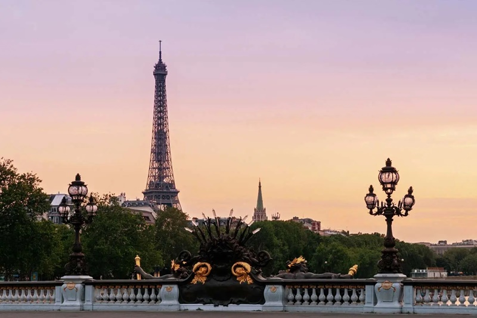

França: Torre Eiffel em Paris
A Torre Eiffel é uma estrutura de ferro de 324 metros de altura que oferece vistas panorâmicas deslumbrantes de Paris a partir de seus mirantes.Localmente apelidada de "Dama de Ferro" (em francês: La dame de fer), foi construída de 1887 a 1889 como a peça central da Exposição Universal de 1889 e foi inicialmente criticada por alguns dos principais artistas e intelectuais franceses por seu design, mas tornou-se um ícone cultural global da França e uma das estruturas mais reconhecidas do mundo.
| Arquiteto | Stephen Sauvestre |
|---|---|
| Engenheiro | Gustave Eiffel |
| Altura | 330 metros |
Itália: Coliseu de Roma
É um famoso anfiteatro construído na Roma Antiga durante o reinado dos imperadores Vespasiano e Tito. Construído por volta dos anos 70-80 d.C., o Coliseu era usado para uma variedade de eventos, incluindo batalhas de gladiadores, representações teatrais e competições esportivas. Com sua capacidade para até 80.000 espectadores, é uma maravilha da engenharia romana. Hoje, o Coliseu é um dos monumentos mais emblemáticos do mundo, representando a grandiosidade da Roma Antiga e a resistência humana, além de ser um destino turístico de renome.

Inglaterra: Torre Big Ben de Londres
A Torre do Big Ben, oficialmente chamada de Torre Elizabeth, é um icônico marco de Londres. Localizada no Palácio de Westminster, abriga o famoso sino chamado de Big Ben. Construída no estilo neogótico, a torre é conhecida por sua imponência e relógio. O Big Ben é um dos maiores sinos de torre do mundo e emite um som característico que se tornou um símbolo sonoro de Londres. O conjunto é uma atração turística icônica e uma parte integral da história e cultura britânicas.

Espanha: Sagrada Família em Barcelona
É uma majestosa basílica projetada pelo renomado arquiteto Antoni Gaudí. Sua construção começou em 1882 e ainda está em andamento. A Sagrada Família é famosa por sua arquitetura única, com uma combinação de estilos, incluindo o modernismo catalão. As características impressionantes da basílica incluem suas torres imponentes, fachadas ornamentadas e interiores deslumbrantes. É considerada uma das maravilhas arquitetônicas do mundo e um importante local de peregrinação e turismo em Barcelona. A Sagrada Família é uma representação da devoção religiosa e da genialidade de Gaudí e continua a cativar visitantes de todo o mundo.